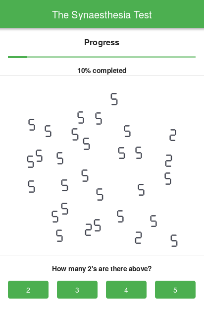

Synaesthesia Test
Creating a test for detection of Synaesthesia
Synaesthesia could be explained as entanglement of the senses in most succinct sense. Many varieties of this symptom exist such as seeing voices and tasting shapes. Grapheme-color synaesthesia is among the diverse array of curious synaesthesia types. More than one percent of the population is estimated to experience it.
I have recently created an online test that aspires to recognize people who experince grapheme-color synaesthesia obliviously. This test is adapted from works of scientistsRamachandran ve E.M. Hubbard. If you are interested in their synaesthesia work click here to read their paper titled *Synaesthesia—A Window Into Perception, Thought and Language .

You could find codebase of the test on my GitHub page. Backend of the test is developed in Golang while HTML Framework library Framework7 eased my job for front-end stuff. The test is in development phase. Any advices regarding the content of the test or codebase would be appreciated. Please consider sharing the test after completion so that it could reach out to more people. By the way, if you wonder I have no symptoms for synaesthesia as far as the test tells 🙃
By the way this is my first blog post. I hope this blog to be long-lived and would be an outlet to express my various works and ideas to the blogsphere and per aspera ad astra .